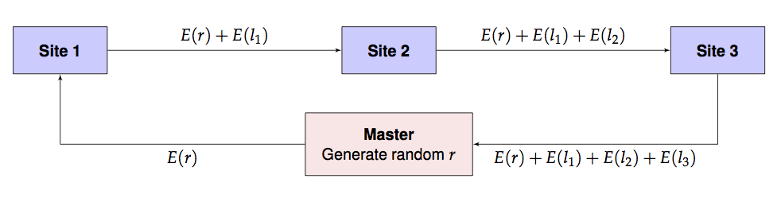

Maximum Likelihood Computation using Homomorphic Computation
Balasubramanian Narasimhan
2026-06-26
Source:vignettes/homomorphing.Rmd
homomorphing.RmdIntroduction
We present a toy example of a homomorphic computation involving maximum likelihood estimation.
Consider the following data motivated by an example from the
mle function in the stats4 R package: we wish
to estimate
,
the Poisson parameter
for randomly generated count data y below:
library(stats4)
set.seed(17822)
y <- rpois(n = 40, lambda=10)
# Easy one-dimensional MLE:
nLL <- function(lambda) -sum(stats::dpois(y, lambda, log = TRUE))
fit0 <- mle(nLL, start = list(lambda = 5), nobs = NROW(y))The function nLL is the negative log-likelihood of the
data and the function mle computes the maximum likelihood
estimate that can be printed out.
summary(fit0)## Maximum likelihood estimation
##
## Call:
## mle(minuslogl = nLL, start = list(lambda = 5), nobs = NROW(y))
##
## Coefficients:
## Estimate Std. Error
## lambda 9.175 0.4789311
##
## -2 log L: 199.5328
logLik(fit0)## 'log Lik.' -99.76641 (df=1)Distributed Computation
Assume now that the data y is distributed between three
sites, none of whom want to share actual data among each other or even
with a master computation process. They wish to keep their data secret
but are willing, together, to provide the sum of their local negative
log-likelihoods. They need to do this in a way so that the master
process will not be able to associate the contribution to the likelihood
from each site. To simulate this, let’s partition the data
y as follows.
y1 <- y[1:20]
y2 <- y[21:27]
y3 <- y[28:40]The overall likelihood function for the entire data is therefore the sum of the likelihoods at each site: How can this likelihood be computed while maintaining privacy?
Assuming that every site including the master has access to a
homomorphic computation library such as homomorpheR, the
likelihood can be computed in a privacy-preserving manner using the
following scheme. We use
and
to denote the encrypted and decrypted values of
respectively.
- Master generates a public/private key pair. Master distributes the public key to all sites. (The private key is not distributed and kept only by the master.)
- Master generates a random offset to obfuscate the intial likelihood.
- Master sends and a guess to site 1. Note that is not encrypted.
- Site 1 computes , the local likelihood for local data using parameter . It then sends on and to site 2.
- Site 2 computes , the local likelihood for local data using parameter . It then sends on and to site 3.
- Site 3 computes , the local likelihood for local data using parameter . It then sends on back to master.
- Master retrieves which, due to the homomorphism, is exactly So the master computes to obtain the value of the overall likelihood at .
- Master updates with a new guess and repeats steps 1-5. This process is iterated to convergence. For added security, even steps 0-5 can be repeated, at additional computational cost.
This is pictorially shown below.

Implementation
The above implementation assumes that the encryption and decryption can happen with real numbers which is not the actual situation. Instead, we use rational approximations using a large denominator, , say. In the future, of course, we need to build an actual library is built with rigorous algorithms guaranteeing precision and overflow/undeflow detection. For now, this is just an ad hoc implementation.
Also, since we are only using homomorphic additive properties, a partial homomorphic scheme such as the Paillier Encryption system will be sufficient for our computations.
The package exports a small actor surface — Site,
Master, and the helpers make_site(),
make_master(), round_robin_chain(),
run_round_robin() — that captures the round-robin protocol
once and lets each application supply its own per-site summary
function.
The per-site negative log-likelihood is just an ordinary R function
of (data, theta). We write it out and hand it to the
constructor:
library(homomorpheR)
local_nll <- function(data, lambda) {
-sum(stats::dpois(data, lambda, log = TRUE))
}1. Generate a key pair
keys <- paillier_keypair(modulus_bits = 1024)2. Build sites and master, wire the chain
site1 <- make_site("Site 1", data = y1, local_fn = local_nll)
site2 <- make_site("Site 2", data = y2, local_fn = local_nll)
site3 <- make_site("Site 3", data = y3, local_fn = local_nll)
master <- make_master("Master", keypair = keys)
round_robin_chain(master, list(site1, site2, site3))round_robin_chain() wires
master -> site1 -> site2 -> site3 -> master and
broadcasts the public key to every site.
3. Perform the likelihood estimation
fit1 <- mle(function(lambda) run_round_robin(master, lambda),
start = list(lambda = 5))Print the summary.
summary(fit1)## Maximum likelihood estimation
##
## Call:
## mle(minuslogl = function(lambda) run_round_robin(master, lambda),
## start = list(lambda = 5))
##
## Coefficients:
## Estimate Std. Error
## lambda 9.175 0.4789307
##
## -2 log L: 199.5328
logLik(fit1)## 'log Lik.' -99.76641 (df=1)The results should be the same as above.
Applications via distcomp and opencpu
One can imagine these sort of computations being constructed within the framework described the R package distcomp where the sites are opencpu servers and there is a master process executing the computation. Much work remains to be done to make this work in a seamless manner; however, as this proof-of-concept example shows, the technical hurdles are quite surmountable.